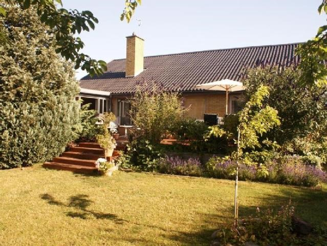

GP All-stars
GP All-stars
Prisudvikling i København: Huspriser på himmelflugt
I de sidste par år er priserne på huse og lejligheder i København vokset voldsomt. Nogle af dem er steget med over 3 mio. kr. på bare 5 år. Mange klager over, at husene er steget så voldsomt i pris i København og omegn.

Et hus i København der kostede 2,5 millioner for 5 år siden, koster meget vel i dag 4 millioner kr.(Billede: Google)
Mathiasloumann@gmail.dk
Arditg9@hotmail.com
Mariusbugge@gmail.com
Folk med lave indkomster, der har planer om at flytte til købenavn, må prøve at finde sig nogle andre planer. Priserne på huse og lejligheder i København er nemlig steget voldsomt i de sidste par år. I april steg alle huse i København og omegn med 1,3%. På landsplan steg de 1,1% og 0,9% i Aarhus. I de seneste 5 år er priserne vokset med hele 16,8%. ”Priserne er steget voldsomt her i de sidste 5 år, fordi der har været nogle lave renter, og så har man så valgt at hæve dem kraftigt,” lyder det fra Svend Nielsen, ejendomsmægler fra Nybolig i Greve. ”Det er billigere at bo på landet, fordi det ligger længere væk fra byen, og der kan også være problemer med arbejdspladser og uddannelse. Det er derfor der er flere fordele ved at bo i byen end på landet.” Men det er langtfra alle der har råd til at bo i byen længere.
Fra provinsby til storby
Lise Gaarslev Hansen, kaptajn ved A.P. Møller, boede for 2 år siden i Odense midtby. Hun valgte at flytte til København, ind på Christianshavn. ”Jeg valgte at flytte til byen, fordi der sker meget mere her, og der er flere muligheder,” lyder det fra Lise Hansen.
”Der var en prisforskel på 2,5 millioner kroner, på samme størrelse lejlighed i samme kvalitet! Men jeg er meget tættere på min arbejdsplads, og der er flere muligheder for at lære kulturen i byen at kende.”
Der er så stor en prisforskel, fordi folk søger mod storbyerne på grund af bedre arbejdspladser og flere uddannelsesmuligheder. Men det er ikke kun positivt at flytte fra land til by. ”Folk kommer hinanden meget mere ved ude på landet end i byen. Alt bliver meget mere upersonligt, og i byen kan din nabo nærmest ligge og dø, uden du ved det, fordi man slet ikke snakker sammen! Men hvis jeg selv skulle sige det, fortrækker jeg alligevel livet i byen,” fortæller Lise Hansen, der ikke har fortrudt et sekund. ”Min Lejlighed er faktisk steget med over en million kr. på de to år jeg har boet her, så det er allerede en god investering.”
| Kommune |
Kr./m2 |
| Gentofte |
46,475 kr./m² |
| København |
40.971 kr./m² |
| Aarhus |
26.616 kr./m² |
| Greve |
22.520 kr./m² |
| Ishøj |
20.530 kr./m² |
| Odense |
16.592 kr./m² |
| Randers |
11.533 kr./m² |
| Bornholm |
10.021 kr./m² |
| Vejen |
8.388 kr./m² |
| Lolland |
7.317 kr./m² |